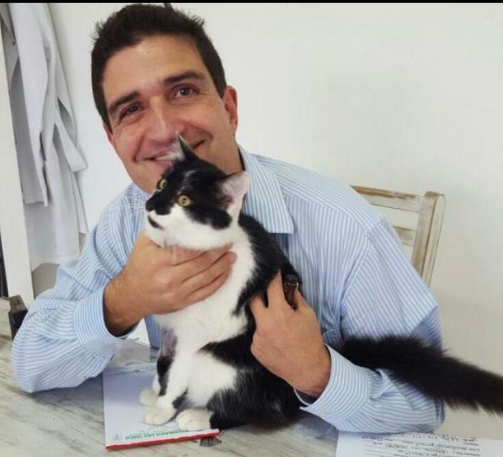
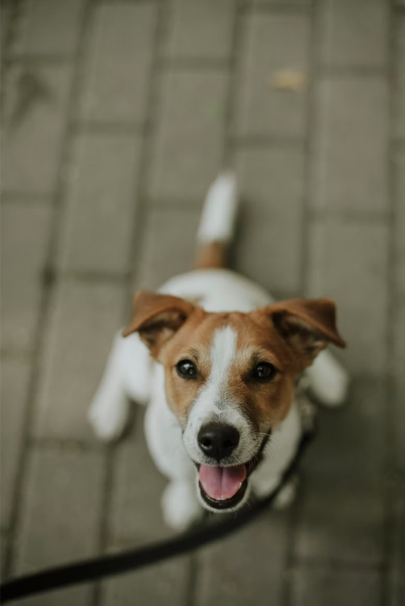
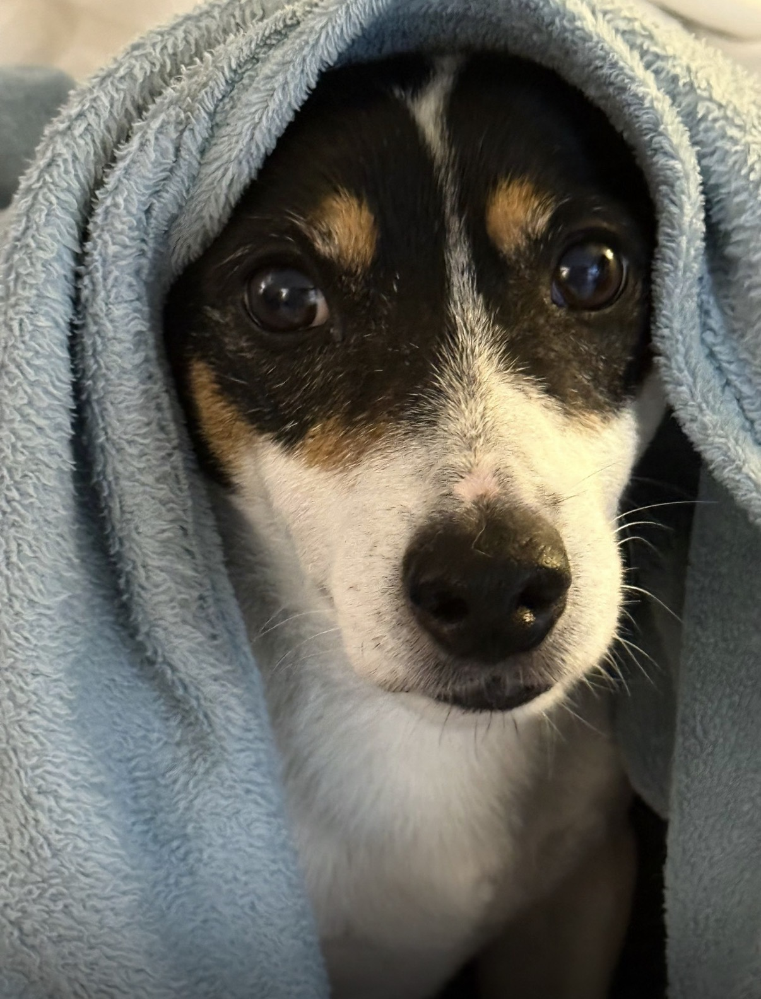
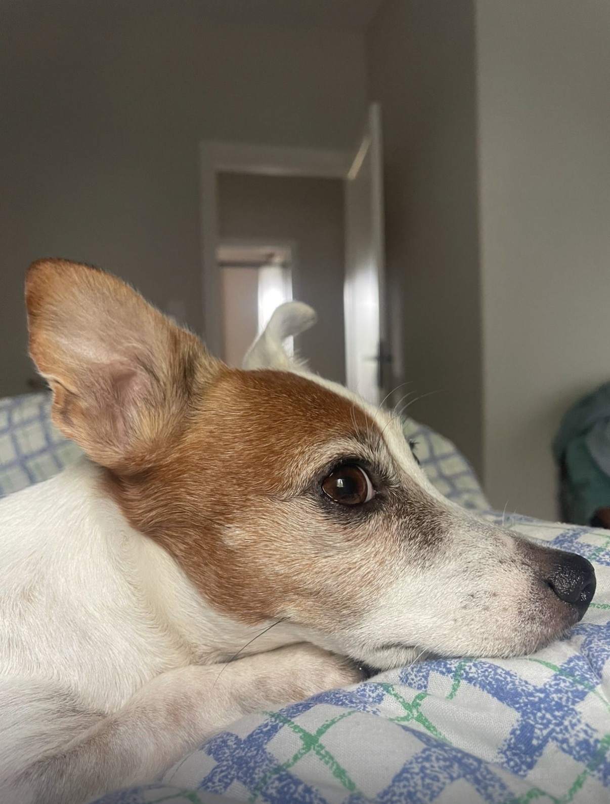
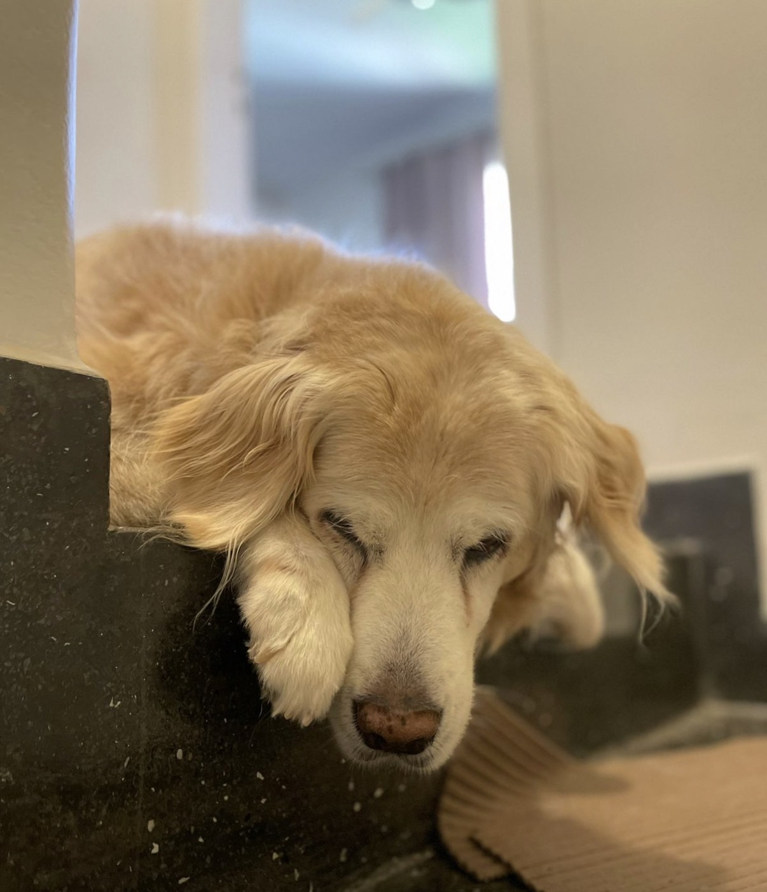
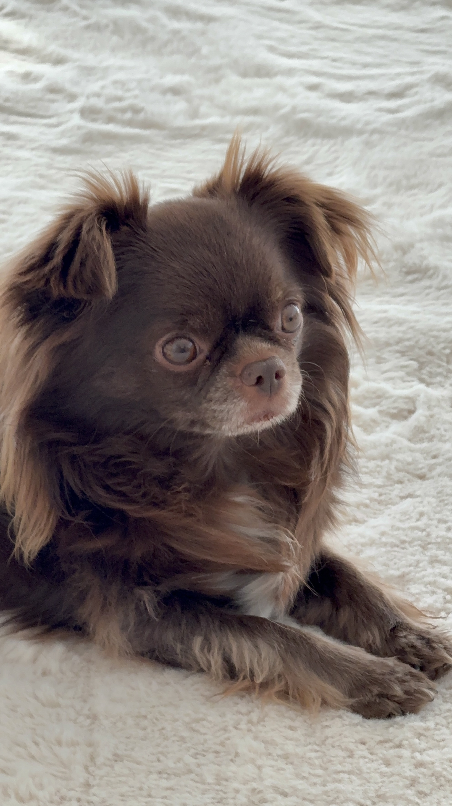

Cuidado verdadeiro para quem faz parte da sua família.
Aqui na São Chico, a consulta tem o tempo que o seu pet precisa. Acreditamos na escuta atenta, em diagnósticos precisos e em conversas transparentes. Porque sabemos que, para você, ele não é só um bichinho — é parte da família.


"Na São Chico, o cuidado começa antes do diagnóstico: começa na escuta, no tempo dedicado e na atenção aos detalhes de cada animal."
Filosofia de cuidado
Consultas sem pressa, conversas francas e um acompanhamento próximo são o nosso padrão diário. Aqui, o acolhimento não é um 'diferencial', é a única forma que sabemos trabalhar.
Tudo o que seu melhor amigo precisa, em um só lugar.
Da primeira vacina aos cuidados da idade avançada. Oferecemos suporte completo com a tranquilidade e a estrutura que o seu pet merece.
Consultas veterinárias
Avaliações completas e sem correria. Ouvimos o histórico do seu pet com toda a atenção para entender o que ele realmente sente.
Vacinação
Proteção sob medida. Criamos protocolos de vacinação seguros e alinhados ao estilo de vida do seu cão ou gato.
Cirurgias
Tranquilidade quando você mais precisa. Realizamos procedimentos com anestesia segura, monitoramento constante e muito carinho no pós-operatório.
Procedimentos dentários
Saúde que começa pela boca. Prevenção e tratamento especial para garantir que seu pet viva sem dor e com qualidade de vida.
Acompanhamento contínuo
Ao lado do seu pet, passo a passo. Acompanhamos cada fase da vida dele para focar no que mais importa: o bem-estar diário.
Uma jornada mais calma, cuidadosa e próxima.
Tempo dedicado
Aqui respeitamos o ritmo e o conforto do seu pet, garantindo uma consulta livre de estresse.
Experiência clínica
Mais de duas décadas de dedicação no Brooklin. Uma bagagem que se traduz em diagnósticos certeiros e decisões seguras.
Proximidade real
Esqueça o atendimento impessoal. Nós conhecemos nossos pacientes pelo nome e construímos laços de confiança verdadeiros com cada família.
Transparência sempre
Nada de termos técnicos complicados. Conversamos abertamente sobre exames, diagnósticos e os melhores caminhos para o tratamento.

Dr. Gustavo Machado
CRMV 12411/SPHá mais de 26 anos, o Dr. Gustavo transformou sua paixão pelos animais em um espaço onde o cuidado fala mais alto. Conhecido no Brooklin pelo carinho e pela paciência, ele é o tipo de veterinário que senta para ouvir, examina com calma e cuida do seu pet como se fosse dele.


O que dizem sobre nós

"O Dr. Gustavo parece um encantador de cães. Além de escutar, examinar com muita atenção, ele explica tudo de uma forma simples."

"Sempre fico impressionada com o carinho no atendimento. A Mia era muito medrosa, mas com o Dr Gustavo ela fica tranquila."

"O Dr Gustavo cuida da Amorinha há 13 anos. Ele cuidou dela desde a castração até consultas rotineiras. Não conheço nenhum profissional como ele."

"Atenção aos mínimos detalhes. Descobriram o problema da Titi rapidinho após várias tentativas frustradas em outros lugares."
"Excelente estrutura e um médico que realmente ama o que faz. O Zeus adora as consultas de rotina!"
"A estrutura é ótima, mas o que faz a diferença é o amor que eles têm pelo que fazem. O Zeus vai todo feliz pra lá!"
"Um carinho de outro mundo. Dá pra ver de longe que eles se importam de verdade com a saúde da nossa Mel a longo prazo."
"Achei o lugar certo no Brooklin. O Simba sempre volta super tranquilo pra casa, sem aquele trauma de ir ao veterinário."
"Sempre que me bate uma dúvida, chamo eles e a resposta é rápida e super clara. A Nina tá ótima graças a esse acompanhamento."
"Eu indico pra todo mundo! Quando você acha um veterinário que não olha pro relógio durante a consulta, não larga mais."
"Foi um alívio gigante. O Bolinha sempre tremia pra ir ao vet, mas o jeito como o Dr. Gustavo lidou com ele mudou tudo!"
Dúvidas Frequentes
Não funcionamos como hospital 24h. Nosso foco é na clínica preventiva e curativa com hora marcada, para que cada pet tenha o tempo e a paz que merece. Se houver alguma emergência de madrugada, indicamos os melhores hospitais parceiros da região.
Somos apaixonados e especialistas no atendimento de cães e gatos.
Não. Aqui a dedicação é 100% voltada para a saúde e bem-estar clínico do seu pet. Deixamos a parte de estética para os salões parceiros.
Sim! Para garantir aquela nossa marca registrada de "cuidado sem pressa", funcionamos com hora marcada. É só mandar um "Oi" no WhatsApp que ajeitamos a agenda para você.
Isso mesmo. O Dr. Gustavo é quem atende e cuida de cada detalhe. Assim, ele sabe de cor todo o histórico de saúde do seu pet, criando um vínculo real.
Nossas portas estão abertas de segunda a sexta, das 09h às 18h.